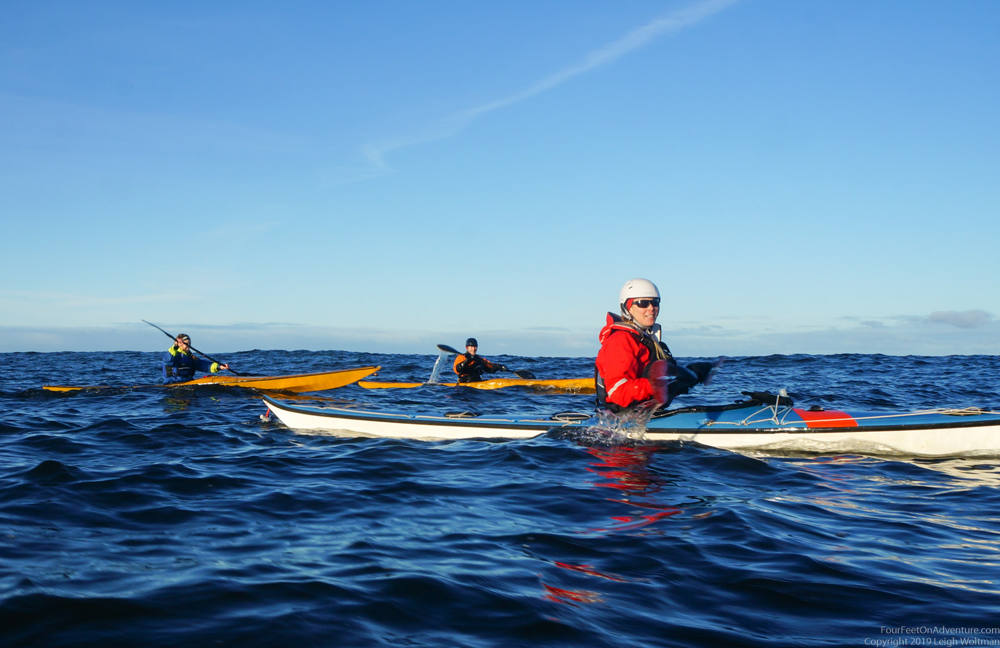
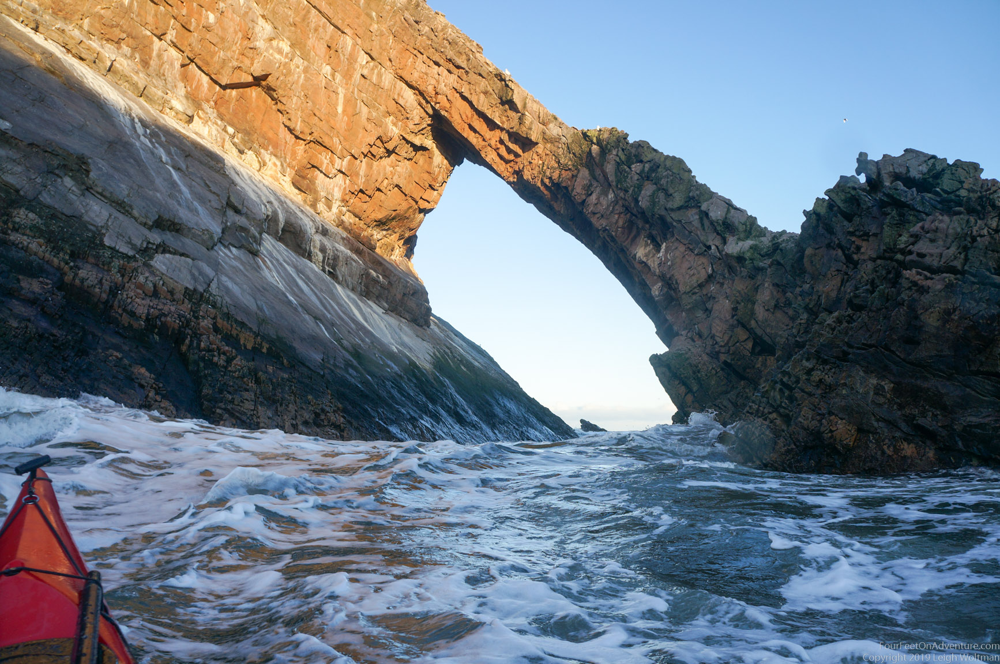

Bow Fiddle Rock
Nights are getting shorter and the sheep can be seen walking around in frosty white fields in the morning. A perfect time to go for a paddle! We discussed with some friends that we would have a go at Bow Fiddle Rock. It’s a part of the coast we hadn’t paddled yet, a bit east from where we live. We had run on the shore last summer when my parents were visiting, Nicky had swum Bow Fiddle Rock, but none of us had paddled it. The weather looked good, so it was time for a little adventure.
We met in Portessie, one of the cute little villages that litters the coastline. We packed our kayaks and set up a shuttle. Time to hit the water. Leigh couldn’t help starting with a seal launch from the pebbley beach, which looked like so much fun that I was jealous I wasn’t in a plastic boat as well. A few skerries with a bit of a surf could be seen from the beach, and before short Ali and Leigh were trying, and managing to catch a surf. After a bit of playing, we left in the direction on Fidochty.

Although the wind was very mild from the west, an easterly swell made the water in constant movement. The swell was high enough you couldn’t see each other if you were on different sides of a wave. However, they were nice and calm, and gave the day some extra lift. They were also constantly hitting the rocks on the cliffy coast, so that we couldn’t do as much exploring as I hoped we could.
Even though we felt we just started, it was getting late, so we decided to head to Findochty to use the shelter of the harbour for an easy lunch spot. There even were little benches, so it didn’t take long before we were sitting in the sun enjoying our food and a warm cup of tea from the thermos. “The boats!!” Luckily one of us (Nicky?) was paying attention and we all jumped up to rescue the boats, that were almost grabbed by a wave that went just a little further. We decided to haul them all up on the harbour wall and continue our lunch in peace.

From here we paddled past Portknockie, checking out a couple of rocks as a playing area. We now came to the first target of our paddle, Bow Fiddle Rock. This quartzite rock is a natural sea arch, looking like the top of a fiddle bow. It’s a cool challenge to paddle (or swim) through it, except with an easterly swell it looked ok only about 50% of the time. Which I guess is not bad, but also, not the best. We decided to give it a miss this time, but definitely put it on our list of to-paddle sea-arches.
Around the corner was the large beach of Cullen. I heard it’s a place where people go surfing, which is great, except for when it’s a bit too big for me, and I have to get back to shore. Luckily, also this town had a little harbour. So, while Leigh and Ali had a last play in the waves, Nicky and I took the easy way out and had a chat with every dog owner in town before making it back to the others.

A great sunny day, ending with Leigh finally getting his Cullen skink (a local speciality dish, fish soup), which he’s been wanting to get forever.